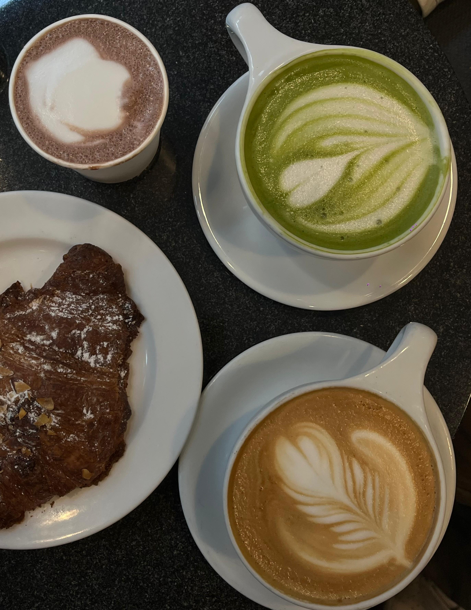

a blurb about me
arc, written down, for once.
Hi, I'm Ovee (pronounced: ‘O’ as in “omg” + ‘vee’),
a Software Engineer-turned-Product Manager. For the last 2 years, I have been writing code at TCS. That job taught me the thing most tutorials can't: the gap between what a business wants and what an engineer ships is the most interesting place to stand. I kept wanting to be on the side of the decision, not just the delivery.
I opted for an Engineering Management degree at Dartmouth to choose a discipline that walks the line between an entirely technical CS degree and a purely business-oriented MBA.
Outside the world of product strategy, I’m still deeply committed to my other long-term passions; books and dance have had me in a chokehold for years. Lately, I’ve added crocheting to the mix (yes, I contain multitudes) and developed a not-so-casual relationship with coffee. At my core, though, I’ve always been creatively inclined, and if there’s an opportunity for a pun, I will absolutely seize the word.
— ovee last edited · this week
